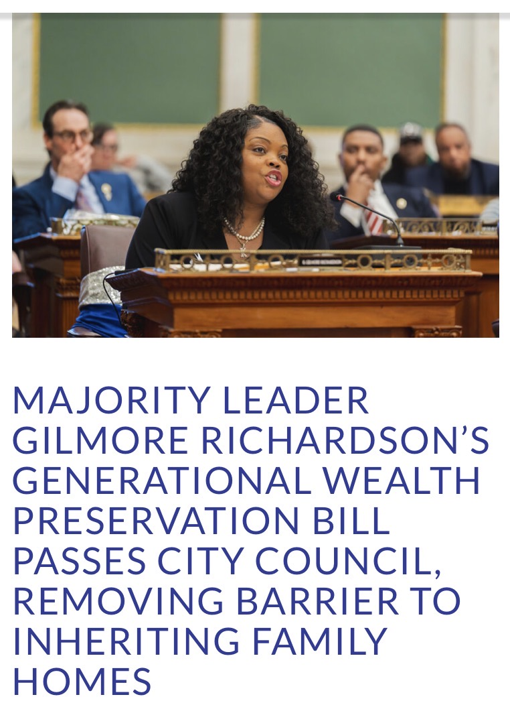
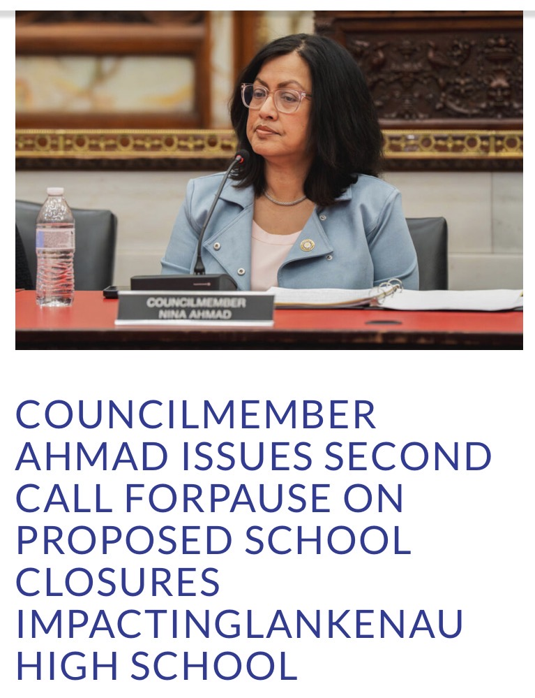
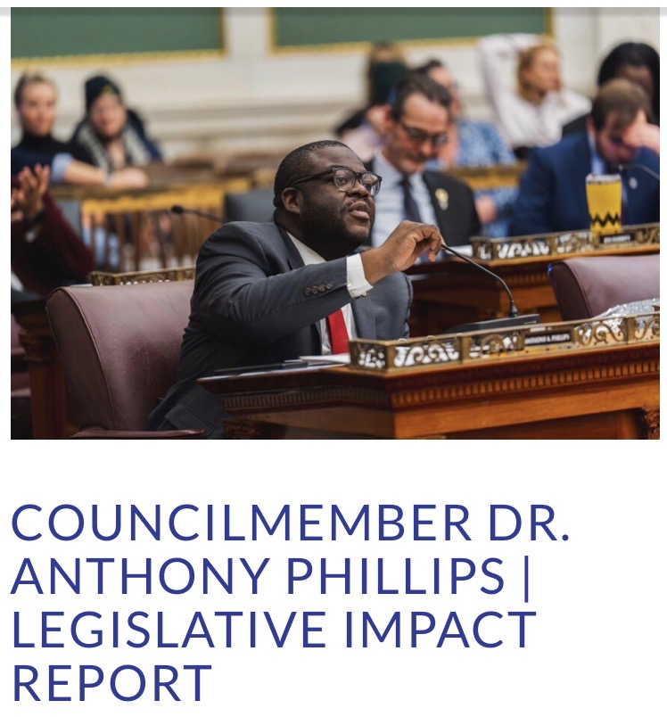
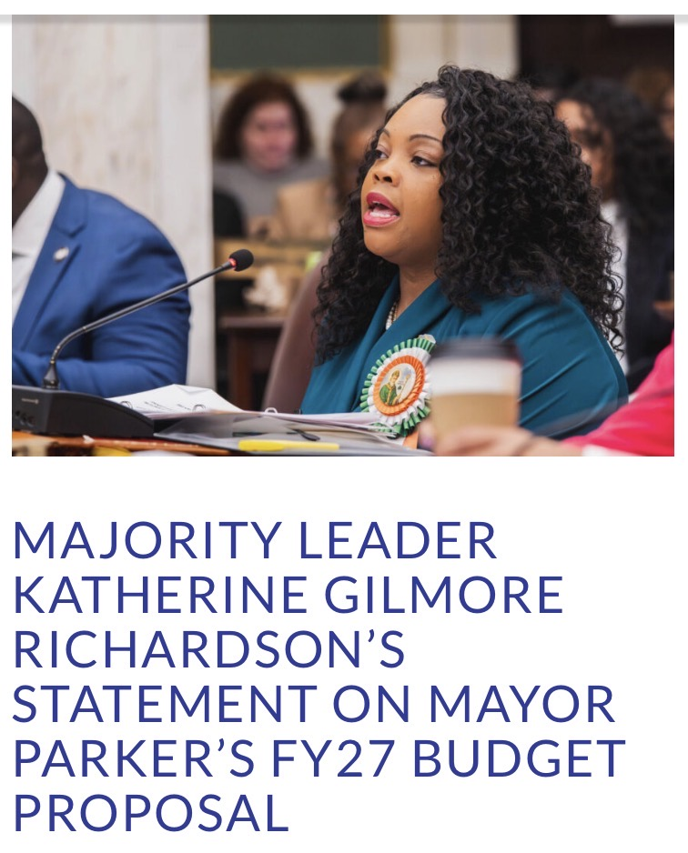

Recent Council News
Each section below includes the title of the event, the main image, and the council member involved. The titles are linked to the official Philadelphia City Council news pages.
Majority Leader Gilmore Richardson’s Generational Wealth Preservation Bill Passes City Council, Removing Barrier to Inheriting Family Homes

Council member involved: Majority Leader Katherine Gilmore Richardson
This event discusses a bill meant to help families keep inherited homes and preserve generational wealth in Philadelphia.
Councilmember Ahmad Issues Second Call for Pause on Proposed School Closures Impacting Lankenau High School

Council member involved: Councilmember Nina Ahmad
This update focuses on Councilmember Ahmad’s request to pause proposed school closures that would affect Lankenau High School.
Councilmember Dr. Anthony Phillips | Legislative Impact Report

Council member involved: Councilmember Dr. Anthony Phillips
This report shares recent legislative efforts from Councilmember Phillips related to safety and neighborhood quality of life.
Majority Leader Katherine Gilmore Richardson’s Statement on Mayor Parker’s FY27 Budget Proposal

Council member involved: Majority Leader Katherine Gilmore Richardson
This statement responds to Mayor Parker’s FY27 budget proposal and discusses priorities for Philadelphia residents and neighborhoods.